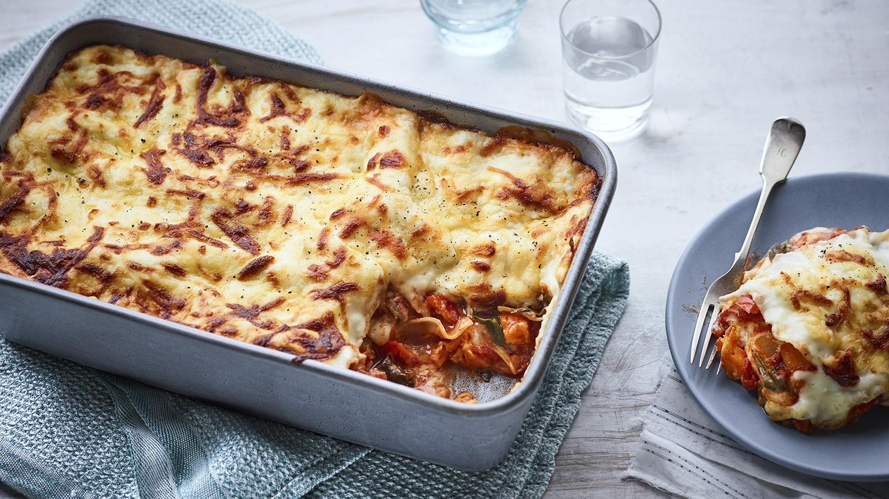

Veggie Lasagna

Description
This delicious vegetarian lasagna will have everyone licking their fingers.
It is made spice and everything nice...
This lasagna is filled with vegetables.
It is based on tomato sauce that you can simply buy in the supermarket.
Easy, healthy AND tasty!
Ingredients
- Lasagna
- 3 peppers
- 1 Zucchini
- 1 Onion
- 3 garlic cloves
- 2 carrots
- 3 bottles of tomato sauce (1 arrabiata)
- Flour
- Butter
- Olive oil
- milk
- Grated cheese
- Italian spices
- Nutmeg
- Pepper
- Salt
Steps
- Finely dice peppers, Zucchini, onion, garlic and carrots
- Heat up olive oil in a cooking pot
- Add onion and garlic and let it cook for 3 min or until glazy
- Add carrots and peppers to the pot and let it cook. After 5-10 min, add the zucchini and cook for another 3 min.
- Add the tomato sauce and add salt, pepper, italian spices to taste. Let it simmer on lower heat
- Let butter melt in a sauce pan
- Stir in flour and start to add milk. Keep adding milk when the sauce thickens too much.
- Add salt, pepper and nutmeg to tast
- Preheat the oven on 180 degrees Celsius
- Take a oven safe pot to make the lasagna
- start with a layer of tomato sauce, add lasagna on top of it. subsequently add a layer of bechamel and cheese, lasagna, tomato sauce, bechamel and cheese... End with grated cheese on top
- Bake in the oven according to lasagna package (around 30min)
- Enjoy!